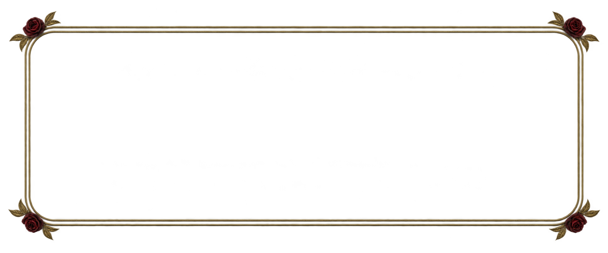

Ornements roses & or
Le même fond noir marbré sous les trois images. Aucune modification du site.
A — Deux roses en diagonale
Le plus épuré : un seul fil doré et deux roses.
B — Quatre petites roses

Plus équilibré, avec un discret motif à chaque coin.
C — Roses sur les côtés
Les angles restent libres ; les roses marquent les côtés.